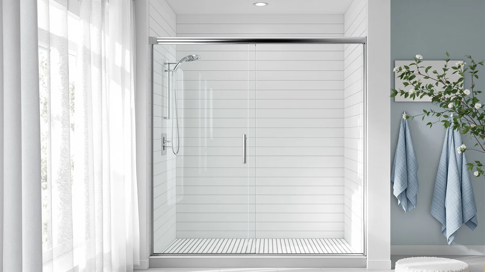

Best Shower Door Seal (2026)
Prices and picks verified as of October 2026. Independent, reader-supported reviews.


Quick Answer
If your frameless glass door drips onto the bathroom floor, the fix is almost always a $9 to $25 shower door seal, not a new door: match the strip to your glass thickness and the leak usually stops within minutes of installing it. For a complete reset instead of a patch, the CAMMOO 56-60" sliding door below replaces the whole panel with a leak-proof seal already built in.
Our pick: CAMMOO 56-60" W x 75", $297.49 Check Price on Amazon
Bottom line: our top pick is the CAMMOO 56-60" W x 75" H Frameless Shower Door at $297.49. The best budget option is the AmazerBath 3 PCS Shower Door Bottom Seal for 3/8" at $8.99.
Things to Know Before You Buy
- The right shower door seal starts with matching your glass thickness. Most frameless doors use 1/4 inch (6mm) or 3/8 inch (10mm) tempered glass, and a seal sized for the wrong thickness will not grip the edge or will leave a gap for water to pass through.
- Find the actual leak point before you order. A gap under the door calls for a bottom sweep, a gap along the hinge or center meeting point calls for a side strip, and water crossing the bathroom floor at the threshold calls for a water dam instead.
- Segmented strips install differently than one continuous piece. A seal sold in several short sections goes on in stages rather than sliding on as a single length, which helps on a door with an uneven or curved bottom edge.
- A full replacement door resets the seal along with everything else. If the frame or glass is also failing, a complete door with a seal already attached avoids trying to match a new strip to old, worn hardware.
- Prices here range from under $10 to nearly $300. Most leaks are a $9 to $25 fix; the pricier option is a full door replacement, not a better seal.
The best shower door seal fixes the most common shower complaint in a glass-door bathroom: a thin stream of water sneaking under or beside the door and pooling on the floor outside. That leak is rarely a sign the door itself is broken. More often a bottom sweep has stiffened and cracked, a side strip has shrunk away from the glass, or the threshold never had a barrier to begin with.
We compared seven seals and sweeps against one full replacement door, looking at glass-thickness compatibility, where each one is built to sit on the door, and what verified buyers report after living with the strip on their own glass. For most frameless doors with a leaking bottom edge, the AmazerBath 3-piece kit is the simplest fix at $8.99. If the leak runs along the side or center gap instead, the Zengest strip covers that spot, and if the door and frame have had enough, the CAMMOO replacement slider ships with its own leak-proof seal attached.
Below, we break down each pick by where it sits on the door, the glass thickness it needs, and the honest trade-offs owners mention, so you can match a shower door seal to your actual leak instead of guessing. We also cover a full comparison table, the options we left out, and the measurement questions that come up most before buying.
Why You Should Trust Us
Best Shower Doors is run by Ilane Tall, who has covered bathroom fixtures and shower hardware for a US audience for years. We do not run a fake testing lab and we do not invent star ratings or review counts for products that do not have them. What we do is read the actual product listings and spec sheets, cross-check glass-thickness compatibility and dimensions, and dig through verified owner reviews to see which shower door seal actually stops a leak rather than which one looks good in the listing photos alone. Every Amazon link here is affiliate-tagged, which supports this site at no cost to you and never changes which seal we recommend.
How We Picked
We started with shower door seals and sweeps sold for frameless and semi-frameless glass doors in the sizes US bathrooms actually use, then filtered on glass-thickness compatibility first, since a 1/4 inch strip will not seal a 3/8 inch door and the reverse is also true. We looked for seals that cover each of the common leak points, the bottom edge, the hinge or center gap, and the floor threshold, rather than assuming one fix solves every leak. We weighed price against the scope of the fix too, since a $9 segmented kit and a $297 replacement door are solving different problems, and we read through verified buyer feedback for recurring complaints about fit, stiffness or adhesive failing early. The seven picks below cover that range: three bottom sweeps, two strip styles, one threshold barrier, and one complete door for a bathroom past the point where a strip will help.
How We Compared
We are upfront about method here. We did not install all seven of these on a test rig in an office. Instead, we compared each shower door seal on the specs that are published and verifiable: glass-thickness compatibility, listed dimensions, segmented versus continuous construction, and material. We weighed that against patterns in verified owner reviews, since the real test of any seal is whether it still grips the glass and blocks water months after installation, not on day one. Where reviewers repeatedly mention the same issue, such as a strip that needs more careful trimming than expected or an adhesive that lets go in a humid bathroom, we call it out in the flaws for that pick rather than leaving it out.
Our Picks

CAMMOO 56-60" W x 75"
What we like
- Ships as one matched unit, so the glass, track and seal come from the same manufacturer instead of a strip bent onto old hardware
- The 0.31-inch tempered glass gives the panel a sturdier feel than a thin replacement strip can add on its own
- The magnetic sliding design closes the center gap between panels, a spot a bottom sweep alone cannot cover
Flaws but not dealbreakers
- At $297.49 it costs more than a dozen replacement seal strips combined
- Only fits a 56 to 60 inch opening at 75 inches tall, so it will not help a door outside that size
| Material | — |
| Size | 60 inches (W) x 75 inches (H) x 0.31 inches (T) |
The CAMMOO is the option for a door that has moved past the point where a new seal strip helps. At 60 inches wide by 75 inches tall with 0.31-inch tempered glass, it replaces the frame, the glass and the seal in a single purchase, which matters if your current door's leak keeps coming back even after you have swapped the bottom sweep once or twice already. A worn track or a warped frame edge can keep defeating a brand-new strip, and in that case the strip was never the real problem.
Because the seal ships already fitted to this specific glass thickness, you skip the step of measuring your old door's edge and hoping a universal strip bends into place without gaps. The magnetic closure at the center also handles a leak point that a bottom-only seal cannot reach, which is common on sliding doors where two panels meet. The trade-off is straightforward: at $297.49 this is a full-door purchase, not a quick patch, and it only fits the 56 to 60 inch range, so measure your opening before you order. For a bathroom where the door has earned a replacement, it is the shower door seal fix that upgrades everything around it too.

2-Pack Butecare Frameless Shower Door
What we like
- Comes as a 2-pack, so you have a spare the next time the first sweep wears out
- Sized specifically for 3/8-inch glass, which avoids the gap you get from forcing a universal strip onto the wrong thickness
- At $21.99 for two, it is one of the lower costs per seal in this roundup
Flaws but not dealbreakers
- Only fits 3/8-inch glass, so it will not work on a thinner 1/4-inch door
- Covers the bottom edge only, so a leak at the hinge or center gap needs a separate strip
| Material | — |
| Size | Bottom sweep -3/8'' |
The Butecare 2-pack is built for one job: replacing the bottom sweep on a 3/8-inch frameless glass door. That thickness match matters more than most buyers expect, since a seal designed for 1/4-inch glass will not grip a thicker door's edge and will leave a gap that water finds within days. Buying the pair means you are not starting from zero again when the first sweep eventually wears down, and it will, since the bottom edge takes the most daily contact with water and grit from your feet.
At $21.99 for two sweeps, this sits near the bottom of the price range here, and it stays focused on the bottom edge rather than trying to solve every leak on the door. That focus is honest: if your water is escaping along the hinge side or where two panels meet in the center, this sweep will not reach it, and you should look at a side strip like the Zengest pick instead. For a straightforward dripping-bottom-edge problem on 3/8-inch glass, it is a direct and inexpensive shower door seal fix.

AmazerBath 3 PCS Shower Door
What we like
- At $8.99 it is the least expensive seal in this comparison
- The 3-section segmented design installs in separate pieces, which can follow an uneven or slightly curved sill better than one rigid strip
- Comes as 3 pieces, so a short section can be swapped later without replacing the whole run
Flaws but not dealbreakers
- Segmented installation means more seams than a single continuous strip, which is more pieces to align correctly
- Covers the bottom edge only, the same leak point as the Butecare pick
| Material | — |
| Size | Bottom - 3-Section Segmented |
At $8.99, the AmazerBath kit is the cheapest way into this list, and it earns that price with a simple design: three separate segmented sections rather than one continuous strip. That layout is not a downgrade so much as a different approach. On a shower sill that is slightly uneven, which many tiled curbs are, three shorter pieces can seat flush where a single long strip sometimes bridges a low spot and lets water through underneath.
The trade-off is more seams to line up during installation, since three pieces means three placements to get right instead of one. Reviewers who stick with the segmented design generally say it is worth the extra few minutes of care. This shower door seal covers the bottom edge only, the same spot as the Butecare sweep above, so if your water is coming in along the side or center of the door, pair it with a strip built for that spot rather than expecting one bottom seal to solve both problems.

Zengest Shower Glass Door Seal
What we like
- Soft, flexible construction bends around the hinge side or center gap where a rigid bottom sweep does not reach
- At $11.99 it is one of the least expensive strips here
- Can be trimmed to the length you need rather than being locked to one fixed size
Flaws but not dealbreakers
- Soft silicone strips can pick up soap scum faster than a rigid sweep and need periodic wiping down
- Does not address a leaking bottom edge, which may need a separate sweep
| Material | — |
| Size | — |
Most shower door seal problems show up at the bottom, but not all of them. When water tracks out along the hinge side or through the center gap where two sliding panels meet, a bottom sweep will not help, and that is the gap the Zengest strip is built to close. Its soft, flexible material bends around a door edge that a rigid strip would fight against, which matters most on hinge-side leaks where the gap is not perfectly straight.
At $11.99, it is priced like the other budget strips in this list, and reviewers who use it for side or center gaps generally report it closes the leak within the first use once trimmed to length. The soft material is the one honest trade-off: it can collect a thin film of soap scum faster than a stiffer sweep, so plan on wiping it down along with the rest of the glass. It is not a bottom-edge fix, so if that is where your door is leaking, pair it with a sweep rather than relying on this strip alone.

Yecaye 3 Pack 3/8" x
What we like
- Three 39-inch strips sized for 3/8-inch glass, enough to replace the seal more than once without reordering
- Having spares on hand means a cracked seal is a five-minute swap instead of a delayed order
- Sized specifically to 3/8-inch glass, so it seats flush instead of leaving a gap
Flaws but not dealbreakers
- At $22.99 for the pack, it costs more upfront than a single Butecare or AmazerBath seal, even though you get extras
- Fixed at 3/8-inch compatibility and a 39-inch length, so it needs trimming or will not fit a differently sized door
| Material | — |
| Size | 39" x 3/8" (3pcs) |
The Yecaye pack solves a problem that is easy to ignore until it happens: shower door seals discolor and stiffen over time, often faster than people expect in a bathroom that gets daily use. Rather than buying one seal now and ordering again next year, this pack includes three 39-inch strips sized for 3/8-inch glass, so a yellowed or split seal becomes a five-minute swap using a spare you already have instead of a delayed order.
At $22.99, it costs more upfront than a single strip from the Butecare or AmazerBath picks, but the per-seal price works out lower once you count all three. The fixed 39-inch length and 3/8-inch compatibility mean it is built for a specific class of door, so measure your glass thickness and sill length before ordering, and trim to fit if your opening runs shorter. For a household that would rather keep a spare shower door seal in a drawer than deal with a leak twice, it is a practical way to buy ahead.

Raycity 10 Feet Shower Door
What we like
- Sold in a 10-foot length, which covers runs that a pre-cut, fixed-length seal cannot reach
- At $14.99, it is priced like the other budget strips despite the extra length
- One long piece can be cut to seal more than one gap on the same door
Flaws but not dealbreakers
- You have to cut and fit it yourself rather than install a pre-sized strip straight out of the package
- No listed material or thickness spec here, so measure your door and check fit carefully before committing
| Material | — |
| Size | — |
Most of the seals on this list come pre-cut to a standard length, which works until your door runs longer than standard or you need to seal more than one gap. The Raycity strip is sold by the foot instead, in a 10-foot length, so you are not stuck piecing together two short strips to cover one long edge or buying a second kit for a second gap on the same door.
At $14.99, it is priced close to the other budget picks here even though you get noticeably more material to work with, which is the trade-off worth knowing upfront: you are buying length, not a pre-fitted part, so you will need scissors and a careful measurement of your actual gap before you cut. For a nonstandard door, a tall panel, or a household sealing more than one gap with the same shower door seal, that flexibility is the whole appeal.

Zehiels 67" Shower Threshold Water
What we like
- Addresses the shower threshold itself rather than the door, which helps on curbless or low-curb showers where a glass seal cannot reach the floor gap
- At 67 inches, it spans a wide shower entry in one piece
- The collapsible design folds down out of the way rather than becoming a permanent step
Flaws but not dealbreakers
- It solves a floor-level leak, not a door seal problem, so pair it with an actual door seal if the glass itself is also leaking
- At $23.99, it is one of the pricier individual seals here, not counting the full replacement door
| Material | — |
| Size | — |
Not every shower leak comes from the door. On a curbless or low-curb shower, water can cross straight over the threshold onto the bathroom floor no matter how well the glass is sealed, and no bottom sweep or side strip fixes that, because the gap is not on the door at all. The Zehiels barrier addresses the floor instead, spanning 67 inches across the shower entry in one piece.
Its collapsible design means it folds down when you are not worried about overflow, rather than sitting as a permanent step you climb over every time you shower. At $23.99, it is one of the pricier single-piece options here, and it is worth being clear about what it does not do: it will not seal a gap along the glass itself, so a door that leaks at the hinge or bottom edge still needs one of the strip picks above in addition to this barrier.
Quick Comparison
| Product | Material | Price | Rating | Best for | Get it |
|---|---|---|---|---|---|
| CAMMOO 56-60" W x 75" | — | $297.49 | 4 | Replacing a whole door and its seal at once | View on Amazon → |
| 2-Pack Butecare Frameless Shower Door | — | $21.99 | 4 | A 3/8-inch bottom sweep with a spare included | View on Amazon → |
| AmazerBath 3 PCS Shower Door | — | $8.99 | 4 | Cheapest fix for an uneven sill | View on Amazon → |
| Zengest Shower Glass Door Seal | — | $11.99 | 4 | Hinge-side and center-gap leaks | View on Amazon → |
| Yecaye 3 Pack 3/8" x | — | $22.99 | 4 | Stocking spares for a 3/8-inch door | View on Amazon → |
| Raycity 10 Feet Shower Door | — | $14.99 | 4 | Custom-length cuts on nonstandard doors | View on Amazon → |
| Zehiels 67" Shower Threshold Water | — | $23.99 | 4 | Curbless showers leaking at the threshold | View on Amazon → |
The Competition
We looked at several universal "fits any door" seal strips that claim to work across every glass thickness, and skipped them. Reviewers consistently report that a one-size strip grips 3/8-inch glass loosely and barely holds 1/4-inch glass at all, which defeats the point of buying a seal in the first place. A seal that does not match your exact thickness is not a cheaper shower door seal, it is one that will need replacing again within weeks.
We also passed on a handful of adhesive-only strips with no mechanical grip on the glass edge, since owner feedback repeatedly flagged the adhesive letting go in a humid bathroom within a few months. A seal that relies purely on glue in a wet, steamy room is fighting its own environment. The seven picks above either clip, fold or wrap around the glass edge instead of depending on adhesive alone, or in the CAMMOO's case, arrive with the seal already built into the door. Whichever leak you are chasing, the best shower door seal for most people here is one of the AmazerBath, Butecare or Zengest strips, and CAMMOO remains the pick if the whole door needs to go.
What these prices have actually done
We check the price of every product on this page every hour and keep the record. These figures are observations, not estimates or forecasts.
- CAMMOO 56-60" W x 75" H Frameless Shower Door has ranged from $282.62 to $374.99 across 25 hourly price checks since September 27, 2026. It was $349.99 at the last check.
- 2-Pack Butecare Frameless Shower Door Bottom Seal for Glass Doors has held at $21.99 across 25 hourly price checks since September 27, 2026. It was $21.99 at the last check.
- AmazerBath 3 PCS Shower Door Bottom Seal for 3/8"(10mm) Glass has ranged from $8.49 to $8.99 across 25 hourly price checks since September 27, 2026. It was $8.99 at the last check.
- Zengest Shower Glass Door Seal Strip has held at $11.99 across 23 hourly price checks since September 27, 2026. It was $11.99 at the last check.
- Yecaye 3 Pack 3/8" x 39" Shower Door Bottom Seal has ranged from $20.79 to $22.99 across 25 hourly price checks since September 27, 2026. It was $22.98 at the last check.
- Raycity 10 Feet Shower Door Side Seal Strip has ranged from $11.19 to $14.99 across 25 hourly price checks since September 27, 2026. It was $14.99 at the last check.
Last updated October 27, 2026. Amazon prices change constantly; the figure you see on Amazon right now is the one that counts.
Frequently Asked Questions
How do I know which shower door seal fits my glass?
Measure your glass thickness with a caliper or ruler before you buy. Most frameless doors use 3/8 inch (10mm) or 1/4 inch (6mm) glass, and a seal sized for the wrong thickness will not grip or will leave a gap. Several of the picks above, including the AmazerBath and Yecaye strips, list the thickness they fit directly in the title, so match that number to your door first.
Bottom sweep, side strip or threshold dam: which part of my door is actually leaking?
Water pooling directly below the door usually means the bottom sweep has cracked or shrunk, which is what the AmazerBath and Yecaye seals replace. A drip along the hinge or the center gap where two panels meet calls for a side strip like the Zengest pick. If water crosses the threshold onto the bathroom floor no matter what the door seal does, a raised barrier like the Zehiels water dam addresses the floor itself rather than the glass.
Is it better to replace the seal or replace the whole shower door?
A seal strip is the cheaper first move, and it solves the problem for most people in minutes. But if the frame, hinges or glass are also worn, or the old seal keeps failing within months of each replacement, a full replacement door such as the CAMMOO, which ships with its own leak-proof seal built in, removes the guesswork of matching a strip to aging hardware.